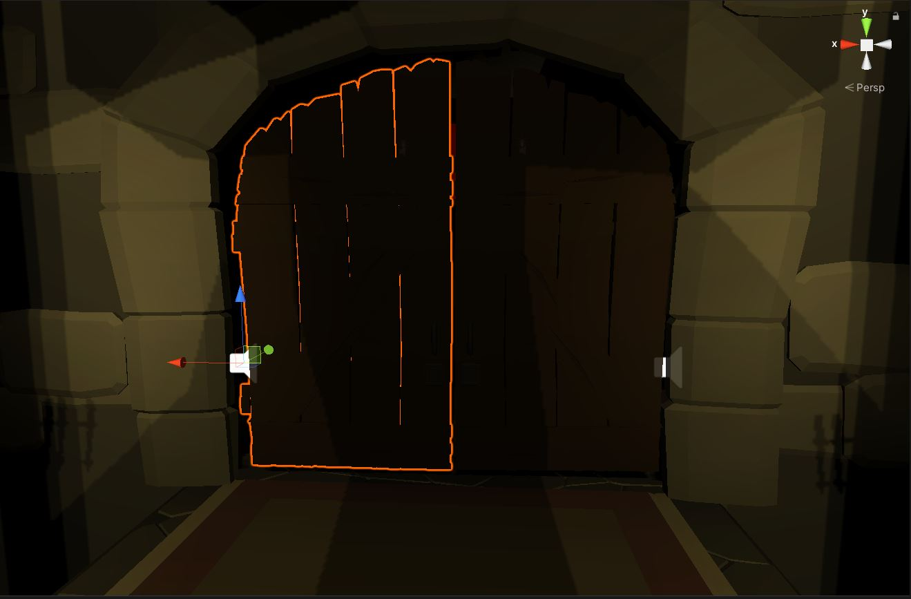

Une Partie
Une partie de Below se déroule en 3 phases. Durant la première chaque joueurs est dans une partie de la carte et affronte des monstres pour récupérer des objets. Dans un second temps les portent bloquant les entrées de chaques parties s'ouvrent permettant aux joueurs de ce rencontrer. La dernière partie rend accessible aux joueurs la salle aux trésors. Pour implémenter ces difféntes phases nous avons donc créé un système d'ouverture de porte à un temps donné.
